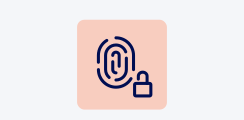
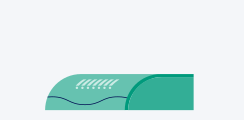
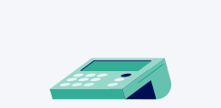
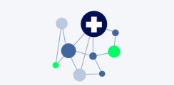
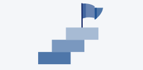

Herbst 2023
Erste GesundheitsID für Versicherte verfügbar

Mitte 2024
Nutzbarkeit GesundheitsID für Versicherte u.a. durch Biometrie, Single-Sign-On verbessert
Mitte 2024
Fachliche Discovery digitale Identitäten für Leistungserbringer abgeschlossen und Spezifikation veröffentlicht
Mitte 2025
Fernsignatur über TI-Gateway verfügbar
Ende 2025
Digitale Identität für Leistungserbringer-Organisationen verfügbar
Ab 2026
Angleichung auf europäische Lösung (EUDI-Wallet)

August 2023
High-Speed-Konnektor als Zugangslösung für große Institutionen mit eigenem Rechenzentrum verfügbar (Krankenhäuser etc.)
Ende Q1/24
Erstes TI-Gateway verfügbar
2024
Marktentwicklung TI-Gateway – schrittweise weitere Anbieter auf dem Markt

Ende 2024
Kontaktlose Kartenterminal-Nutzung möglich
ab 2025
Weitere Marktdurchdringung TI-Gateway und Erweiterung um Mehrwertdienste
Frühjahr 2023
Konzept für Zero-Trust-Architektur in der TI verfügbar

Mitte 2023
Umsetzungsplan für Realisierung bei erster Produktivanwendung
Mitte 2024
Erste Nutzung von Cloud-Diensten für TI-Anwendungen möglich (Healthcare Confidential Computing)

Mitte 2024
Stufenplan für weiteren Rollout der Zero-Trust-Architektur (ZTA) verfügbar: u. a. VSDM
Ende 2024
Erste Produktivanwendung auf Zero-Trust-Architektur (ZTA) aufgebaut, erste zentrale ZT-Dienste entwickelt
Ab 2026
Schrittweise Umstellung weiterer Anwendungen auf Zero-Trust und Rückbau der alten TI 1.0